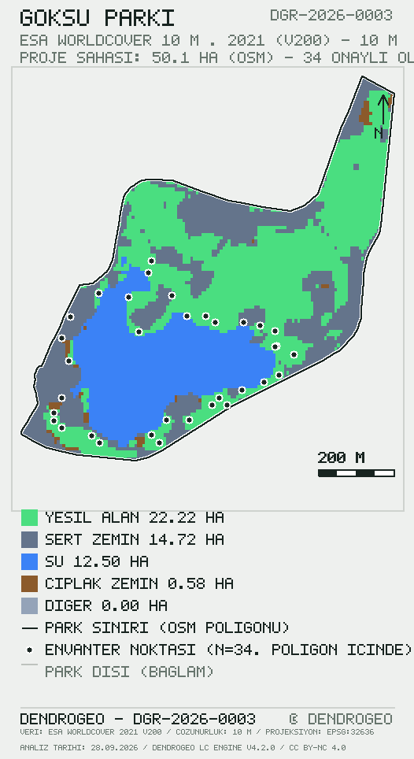

Bu rapor, DendroGeo analiz sistemi tarafından belirlenen yöntem, veri kaynakları ve kalite kontrol prosedürleri doğrultusunda oluşturulmuştur. Rapor bir akreditasyon veya sertifikasyon belgesi değildir; bulgular, beyan edilen veri kaynakları ve çözümleme sürümü kapsamında geçerlidir.
Bu rapor, Göksu Parkı sınırları içerisinde gerçekleştirilen 34 bireysel ağaç ölçümüne (göğüs çapı, boy, tür, GNSS konumu ve fotoğraf kanıtı) dayalı toplam karbon stokunu, %95 güven aralığı ve bağımsız doğrulama izleri ile birlikte sunmaktadır. Toplam karbon stoku 5.04 t [%95 GA: 2.78–7.14] olarak hesaplanmış; hektara karşılığı 0,101 t/ha olarak bulunmuştur. Bütün kayıtlar moderatör onayından geçirilmiştir; park poligonu konum çiti denetiminin kayıt düzeyindeki sonucu §7'de raporlanmıştır. Arazi örtüsü bağlamı ESA WorldCover 10 m · 2021 (v200) ürünüyle üretilmiş; kalite kontrol sonuçları Çizelge 4'te sunulmuştur.
Analiz alanı, Ankara (Türkiye) sınırları içinde yer alan Göksu Parkı park sahasıdır. Saha sınırı, uygulamada çizilen park poligonundan (parks.geom_json) türetilmiş olup 50,11 ha alan kaplamaktadır. Envanter, 2026-09-28 – 2026-09-28 tarihleri arasında 34 ölçüm noktasında gerçekleştirilmiştir; kayıtların tamamı poligon içinde konumlanmaktadır (denetim §7).
3.1 Birincil veri. ESA WorldCover 10 m · 2021 (v200): Sentinel-1 ve Sentinel-2 füzyonundan üretilmiş küresel arazi örtüsü ürünü; mekânsal çözünürlük 10 m; veri dönemi 2021; lisans CC BY 4.0. Erişim, STAC kataloğu (Planetary Computer) üzerinden park poligonunu kesen karolar için gerçekleştirilmiştir.
3.2 Bütünleyici veri. OpenStreetMap (ODbL): park sınırı geometrisi ile su ve açıkça tanımlanmış sert yüzeylerin geometrik doğrulaması/iyileştirmesi amacıyla kullanılmıştır. OSM verisi raster sınıflandırmanın yerine geçmez: sınıf alanları birincil raster üründen hesaplanır; OSM yalnız sınır geometrisi ve bağımsız kontrol için kullanılır.
3.3 Saha verisi. 34 adet DendroGeo saha ölçümü (DBH, boy, tür, GNSS konumu, fotoğraf kanıtı); tümü moderatör onaylıdır. Ölçüm kuralları DendroGeo Saha Protokolü v1'de tanımlıdır.
3.4 Çapraz doğrulama verisi. IO LULC 10 m · 2020 (çapraz doğrulama): bağımsız ikinci sınıflandırma kaynağı; grup bazlı uzlaşma §7'de raporlanır.
4.1 Saha protokolü. Göğüs çapı (DBH), yerden 1,30 m yükseklikte kaydedilen gövde çevresinden türetilmiştir (DBH = çevre ÷ π; 34/34 kayıtta ham çevre değeri saklıdır). Ağaç boyu sahada ölçülmüş (kayıt çözünürlüğü 0,1 m); konum sivil GNSS alıcısıyla kaydedilmiş — ancak alıcı doğruluk değeri (accuracy_m) bu veri sürümünde kaydedilmediğinden GNSS hassasiyeti sayısal olarak beyan edilememektedir; konumsal doğrulama park poligonu üyelik testiyle sınırlıdır (§7); her kayıt için sahada çekilmiş fotoğraf kanıtı zorunlu tutulmuş ve tüm kayıtlarda sağlanmıştır.
4.2 Biyokütle ve karbon. Toprak üstü biyokütle (AGB), Chave ve ark. (2014) pantropikal allometrik denklemiyle hesaplanmıştır: AGB = 0.0673·(ρ·D²·H)^0.976; burada ρ odun yoğunluğu (g/cm³), D göğüs çapı (cm), H ağaç boyu (m). Toprak altı biyokütle (kök biyokütlesi) AGB×0.26, karbon stoku ise toplam biyokütlenin 0.47 katsayısı ile çarpımı olarak tanımlanmıştır. Tür yoğunluğu bulunmadığında grup varsayılanı (iğne yapraklı / geniş yapraklı) kullanılmış ve Çizelge 1'de beyan edilmiştir.
4.3 Belirsizlik. Girdi belirsizlikleri (§4.1) ve allometrik model belirsizliği (%22 değişim katsayısı) Monte Carlo yöntemiyle (n=1000, sabit tohum=20260926) yayılmıştır; model hatası kayıtlar arasında korele kabul edilmiştir, zira aynı denklem tüm kayıtlarda ortak yönde sapma üretir. Güven aralığı, örneklem dağılımının 2.5 ve 97.5 yüzdebirlikleri olarak raporlanmıştır.
4.4 Arazi örtüsü sınıflandırması. Arazi örtüsü sınıflandırması, park sınırı içerisinde mekânsal çözünürlüğü 10 m olan raster veri (ESA WorldCover 10 m · 2021 (v200)) ile gerçekleştirilmiştir. Sınıflandırma sonuçları park geometrisi ile kesiştirilerek değerlendirilmiş; sınır hücrelerinde alan ağırlıklı hesaplama uygulanmıştır (analiz projeksiyonu: EPSG:32636 (UTM 36N)). Bulut/gölge gölgesinde kalan hücreler maskelenmiş ve sınıf toplamına dahil edilmemiştir. Raster kapsama alanı ile park geometrisi alanı arasındaki bağıl fark %0,5 eşiğini aşarsa sonuç YAYINLANMAZ; bu sürümde fark %0,196 olarak ölçülmüştür (Çizelge 3).
4.5 Doğrulama zinciri. (i) Her kayıt moderatör onayı gerektirir (34/34 kayıt 'Onaylı' durumundadır; zaman damgalı onay kaydı 34/34); (ii) ölçüm konumunun park poligonu içinde olması veritabanı tetiği ile zorunlu kılınmıştır (trg_geo_fence; zorunluluk, 0007 geçişinden sonraki kayıtlara uygulanır, önceki kayıtlar için kayıt düzeyindeki denetim sonucu §7'de beyan edilir); (iii) arazi örtüsü çözümlemesinde raster/park alan farkı %0,5 eşiğini aşarsa sonuç yayınlanmaz; (iv) yayınlanan sayfanın içerik bütünlüğü SHA-256 hash'i ile açılışta canlı doğrulanır (§7).
5.1 Karbon stoku. Çizelge 1 tür bazlı özet istatistikleri, Şekil 1 ise karbon paylarının dağılımını vermektedir.
| Tür | Grup | n | Ort. DBH (cm) | Ort. boy (m) | Karbon (kg) | Pay |
|---|---|---|---|---|---|---|
| SÜS ERİĞİ | YAPRAKLI | 3 | 31,2 | 9,0 | 550,3 | %10,9 |
| SALKIM SÖĞÜT | YAPRAKLI | 6 | 42,0 | 10,9 | 1.779,0 | %35,3 |
| HALEP ÇAMI | İBRELİ | 1 | 18,1 | 9,3 | 49,1 | %1,0 |
| CEVİZ | YAPRAKLI | 1 | 28,6 | 8,3 | 124,8 | %2,5 |
| KARAÇAM | İBRELİ | 2 | 30,1 | 11,6 | 328,6 | %6,5 |
| DOĞU ÇINARI | YAPRAKLI | 1 | 26,7 | 6,9 | 97,4 | %1,9 |
| MAVİ LADİN | İBRELİ | 2 | 36,6 | 9,6 | 421,8 | %8,4 |
| AT KESTANESİ | YAPRAKLI | 4 | 26,1 | 9,5 | 454,1 | %9,0 |
| KARAAĞAÇ | YAPRAKLI | 1 | 22,3 | 7,1 | 66,7 | %1,3 |
| GÖKNAR | İBRELİ | 1 | 16,9 | 6,8 | 23,1 | %0,5 |
| ATLAS SEDİRİ | İBRELİ | 1 | 40,7 | 11,3 | 294,2 | %5,8 |
| DİŞBUDAK | YAPRAKLI | 2 | 33,7 | 6,9 | 319,9 | %6,4 |
| DUT | YAPRAKLI | 2 | 21,5 | 4,9 | 88,9 | %1,8 |
| IHLAMUR | YAPRAKLI | 1 | 12,7 | 4,5 | 10,6 | %0,2 |
| AKÇAAĞAÇ | YAPRAKLI | 3 | 24,4 | 8,5 | 274,3 | %5,4 |
| KATALPA | YAPRAKLI | 1 | 20,1 | 7,8 | 42,1 | %0,8 |
| LADİN | İBRELİ | 1 | 24,8 | 10,0 | 73,1 | %1,5 |
| SIĞLA | YAPRAKLI | 1 | 18,1 | 7,5 | 38,9 | %0,8 |
5.2 Arazi örtüsü. Sınıf alanları Çizelge 2'de sunulmuştur; mekânsal dağılım §6'da (Şekil 2) gösterilmektedir.
| Sınıf | Alan (ha) | Pay |
|---|---|---|
| Yeşil alan | 22,22 | %44,4 |
| Su | 12,50 | %25,0 |
| Sert zemin | 14,72 | %29,4 |
| Çıplak zemin | 0,58 | %1,2 |
| Diğer | 0,00 | %0,0 |
5.3 Alan dengesi. Çizelge 3, park geometrisi ile raster kapsama alanının karşılaştırmasını verir; bu karşılaştırma sonuçların üretilmesinden ÖNCE hesaplama bütünlüğünün kontrol edildiğini belgeler.
| Büyüklük | Değer |
|---|---|
| Park geometrisi alanı | 50,11 ha |
| Analiz edilen alan (raster kapsama) | 50,01 ha |
| Sınıflandırılan alan | 50,01 ha |
| Alan farkı | -0,10 ha |
| Alan farkı (%) | 0,196 % |

Sonuçlar üretilmeden önce hesaplamanın bütünlüğü aşağıdaki kontrollerle doğrulanmıştır (Çizelge 4). Kontroller otomatiktir; eşik ihlalinde yayın durdurulur.
| Kontrol | Sonuç | Ayrıntı |
|---|---|---|
| Park geometrisi | ✓ Geçerli | parks.geom_json (uygulamada çizilen sınır) · 50,11 ha · kendini kesme yok (tarandı) |
| Raster kapsama | ✓ Geçerli | 7864 kaynak hücre · kapsama 50,01 ha |
| Alan dengesi | ✓ Geçerli | raster/park alan farkı %0,196 (eşik %0,500) |
| Hücre–kesit hesabı | ✓ Geçerli | tam poligon–hücre kesişimi; sınır hücrelerinde alan ağırlıklı hesap |
| Veri kaynağı | ✓ Geçerli | ESA WorldCover 10 m · 2021 (v200) · yıl 2021 · 10 m |
| Sınıflandırma | ✓ Geçerli | 5 sınıf · maskeli alan yok |
| Çapraz doğrulama | ✓ Geçerli | IO LULC 10 m · 2020 (çapraz doğrulama) uzlaşması: green %0, water %94, hard %55, bare %0, other %100 |
| Tür sözlüğü eşleşmesi | ✓ Geçerli | 34/34 kayıt kanonik tür sözlüğüyle eşleşti |
| Fotoğraf kanıtı | ✓ Geçerli | 34/34 kayıt sahada çekilmiş fotoğraf bağlantısı taşıyor |
| GNSS doğruluk kaydı | ⚠ Kaydedilmedi | 0/34 kayıtta accuracy_m değeri var — GNSS hassasiyeti bu sürümde SAYIYLA beyan edilemiyor; park üyeliği poligon testiyle doğrulandı |
| Envanter tutarlılığı (h/d) | ✓ Geçerli | 34/34 kayıt boy/çap oranı 15–120 aralığında |
| Karbon yeniden hesabı | ✓ Geçerli | 34/34 kayıt panel denklemiyle (Chave 2014 + kanonik ρ) ±%20 içinde yeniden üretildi |
| Konum çiti | ✓ Geçerli | 34/34 kayıt poligon içinde |
| Moderasyon | ✓ Geçerli | 34/34 kayıt onaylı · zaman damgası 34/34 |
| Rapor üretimi | ✓ Geçerli | içerik hash'i sha256:31d6d84218f6ab75… (canlı doğrulama §7'de) |
DGR-2026-0003 · sürüm 1.0 · yayın 2026-09-28sha256:31d6d84218f6ab75c35141d07236641994a41e819dcfdd20ae2134260e45ec01Arazi örtüsü sınıflandırmasına göre analiz alanının yeşil alan %44,4; sert yüzey %29,4; su %25,0; açık/çıplak alan %1,2 şeklinde dağıldığı belirlenmiştir; baskın sınıf %44,4 pay ile Yeşil alan sınıfıdır.
Ölçülen 34 bireyin toplam karbon stoku 5.04 t [%95 GA: 2.78–7.14] olarak hesaplanmış; stokun yapraklı türlerde %76,4, ibreli türlerde %23,6 biriktiği görülmüştür. Hektar başına karşılık 0,101 t/ha düzeyindedir.
Örneklem 34 bireysel ölçüme dayanmaktadır; sonuçlar ölçülen bireylerin toplamını verir ve parkın ölçülmeyen bölümlerine ekstrapole edilmemelidir.
Bu bölüm yalnızca ölçüm ve sınıflandırma sonuçlarından türetilen betimleyici ifadeleri içerir; normatif değerlendirme (ör. “iyi durumda”, “yetersiz”) yapılmamıştır.
| Öğe | Kayıt |
|---|---|
| Analiz sürümü | DendroGeo LC Engine 4.2.0 · uygulama 3.0.0 |
| Veri seti | ESA WorldCover 10 m · 2021 (v200) |
| Çözünürlük | 10 m |
| Park geometrisi | kayıtlı (way/423602737; yayın anındaki sınır) |
| Analiz yöntemi | sürüm kontrollü (git commit 37a0b62) |
| Üretim komutu | node scripts/make-report.mjs --park 25 |
Bu raporun yeniden üretilebilmesi için kullanılan yöntem, veri kaynağı ve analiz sürümü rapor üst verisinde (metadata.json) kayıt altına alınmıştır. Raster girdi bulut kataloğundan okunduğu için, kaynak ürünün YENİ bir sürümü yayımlanırsa aynı komut farklı sonuç üretebilir; bu nedenle veri seti sürümü (v200, 2021) ve üretim anı §11'de sabitlenmiştir.
| Rapor | Sürüm | Tarih | İşlem |
|---|---|---|---|
DGR-2026-0003 | 1.0 | 2026-09-28 | İlk yayımlama (bu rapor · geçerli sürüm) |
Yayımlanmış rapor içeriği değiştirilemez. Düzeltme gerekirse rapor geri çekilir (yayın panelinde 🗑) ve aynı park için yeni DGR kimliğiyle yeniden yayımlanır; bu tablo zinciri gösterir. Geri çekme işlemleri rapor/yayin-kuyrugu.json günlüğünde ve git geçmişinde saklanır.
https://doi.org/… eklenir; DGR kimliği ve sürüm bilgisi değişmez. Yöntem atıfları: Chave ve ark. (2014) 10.1111/gcb.12629 · ESA WorldCover 10 m 2021 v200, CC BY 4.0 · OpenStreetMap katkıcıları (ODbL).@techreport{dgr20260003,
author = {Şirin, Nagihan and Şirin, Sinan},
title = {Göksu Parkı ağaç envanteri ve karbon stoku raporu},
year = {2026},
number = {DGR-2026-0003},
version = {1.0},
publisher = {DendroGeo},
url = {https://dendrogeo.org/rapor/DGR-2026-0003/},
note = {sha256:31d6d84218f6ab75…}
}
10.5281/zenodo.7254221 (CC BY 4.0).10.1111/gcb.12629 — §4.2'de kullanılan allometrik denklem.Ham veriler CC BY-NC 4.0 lisansı ile açıktır; yeniden kullanımda §13 künyesine atıf zorunludur. metadata.json, DataCite desenine yakın makine okur üst veriyi taşır ve DOI kaydına hazırdır.